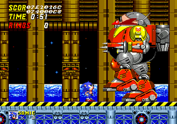
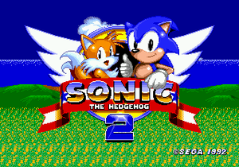
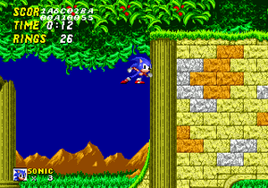
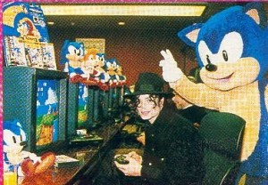
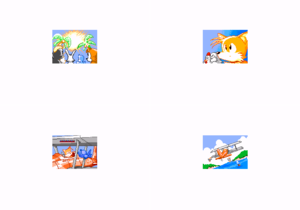

Sonic The Hedgehog 2
 De: La Frikipedia, la enciclopedia extremadamente seria.
De: La Frikipedia, la enciclopedia extremadamente seria.
De la serie Videojuegos:
Sonic The Hedgehog 2

Sonic el erizo está de regreso, ahora con mascota nueva.
| Desarrollado por:
|
SEEE-GAAA !
|
| Distribuido por:
|
El mismo que el desarrollador
|
| Diseñado por:
|
Iujinaca (Yuji Naka), Iasusillamaguchi (Yasushi Yamaguchi), y otros ponjas.
|
| Motor
|
V8 con biodiesel (y unos toques de alcohonafta)
|
| Género(s)
|
Machos, no muy fanáticos, pero machos al fin (aunque algunos sudacas creen que Tails es hembra)
|
| Fecha de lanzamiento:
|
Sonic era muy tímido, pero desde que empezó a salir de juerga se volvió bastante lancero.
|
| Modos de juego:
|
jogo bonito
|
| Requisitos:
|
Ser el lameculo de Sonic y ayudarlo a acabar con Eggman.
|
| Disponible en:
|
siempre estan dispuestos, pero los que creen que Tails es hembra piensan que a veces está indispuesta.
|
| Formatos:
|
8, 16, 32 y 128 bits (los 64 se los pasó de largo)
|
| Edades:
|
Tails tiene algunos años menos que Sonic, y Sonic tiene algunos años mas que Tails ¬¬
|
| Puntuaciones:
|
20/20, IQ de 200, y A+ en ortografía y gramática.
|
- "I wanna fly high... Mary Jane makes me fly high!!!"
Sonic The Hedgehog 2 es un videojuego lanzado en 1992 para la consola Sega Mega Drive, y considerado un clásico entre los clásicos por ser la secuela directa del primer Sonic The Hedgehog, aquel clásico juego que un año antes nos había dejado pasmados con la alta velocidad y gráficos y efectos de sonido nunca antes vistos, que sirvieron para que SEGA le diera de patá en los cojones a Nintendo y por fin pudiera poner a dormir al patético Mario Bros que ya había quedado obsoleto, ganando así la cima del mercado de los videogames durante toda la década del 90, y debido a tal éxito entonces decidieron que no podían dejar pasar la oportunidad de convertir a Sonic en una franquicia reentable y sustentable en el tiempo, y desde aquellos tiempos se dedicaron a sacar mas juegos de continuidad de este erizo, siendo el Sonic 2 la primera de esas tantas secuelas.
Historia
Concepto, Creación y Desarrollo
En el año 1992, SEGA ya se había consagrado como Líder Supremo de la industria de los videogames gracias a dictadores fachas tal como nos enseñó Sonic El Erizo. Así pues, con semejante argumento exitosísimo SEGA desbancó al Mario de Nientiendo y por eso decidieron que la gloria de Sonic no debía ser pasajera ni limitarse a solo un juego exitoso y ya, sino que ahora el siguiente paso que debería dar la empresa era convertir a Sonic en una franquicia completa con su saga propia para lanzar mas juegos que Mario, y así el erizo azul sería protagonista de su propia serie de continuidad figurando como caballito de batalla de Sega y sacando al mercado tantos juegos basados en sus aventuras hasta hartar a los gamers o hasta que esos gamers crecieran y se hicieran lo suficientemente hombres como para dejar de jugar videojuegos, cosa que como sabemos generalmente no ocurre ya que la mayoría de los gamers son nerds que nunca perderán la virginidad y por eso seguirán jugando a los juegos de Sonic por el resto de su patética vida.
Así las cosas, el equipo de programadores de SEGA dedicados exclusivamente a Sonic pasaron a ser conocidos como Sonic Team, y con sus lacayos del Sega Technical Institute de V8 con 900 caballos de fuerza) con el que pudieron ampliar los megas necesarios para expandir la memoria de programación del game, y así se pusieron como meta el hacer cada nuevo juego de Sonic mas rápido que el anterior, con mas niveles, con mejor sonido, y agregándole mas personajes...
Argumento del juego
Sonic estrenando secuela, junto a su lacayo Tails.
Los Mobius y concretar sus planes de derecha, al cual llamaría Eggman Empire ("Imperio Huevón"), obviamente siguiendo con la tónica de copiarle a Colas", en clara referencia a lo que Sonic le estaba mirando a Tails las dos colas que tenía este simpático zorrito. Sonic se marcha ahora a buscar a Eggman para darle ostias como siempre, pero nota que alguien le sigue el paso, ¿y quien era?, obviamente la zorra de nueve colas el zorro de dos colas que aunque no era tan veloz como el erizo, igual podía seguirle el rastro porque a sus dos rabos los hacía girar como una hélice y así conseguía un efecto turbina que le permitía volar como rotor de helicóptero para alcanzar a Sonic y joderle las bolas todo el día. Desde entonces Tails siempre sigue a Sonic volando tras sus pasos, y muchos creen que desde este encuentro se hicieron amigos pero en realidad no es así, simplemente Tails le rompe las bolas a Sonic y lo sigue a todas partes mientras Sonic corre y trata de ir mas rápido para escaparse del molesto de Tails, pero como lo ves a simple vista pareciera que los dos corren juntos porque son compinches aunque en realidad el erizo ya no lo aguanta mas a este niñato del averno y nomas corre rápido para intentar dejarlo atrás. Igual así ambos tienen un enemigo en común: el collar antipulgas Dr. Robotnik, y por eso siempre terminan uniendo fuerzas para golpearle ocho veces a Eggman y hacerlo mierda, o mas bien Sonic es quien golpea a Eggman y Tails mas bien se pierde a mitad de camino y vuelve de a ratos desde arriba de la pantalla nomás para que los badniks o disparos de Eggman vuelvan a darle ostias y siga siendo un inútil que nunca sirve para ayudar a Sonic como corresponde. Finalmente, ambos recorren la "Isla Ladooeste" solo para darse cuenta de que ahora no hay que juntar 6 Chaos Emeralds sino 7, y si no lo hacen entonces Eggman se quedará con las 7 gemas y las usará para propulsar su estación espacial Death Egg que destruirá todo el planeta y será el fin del mundo!!!
Personajes
- Sonic The Hedgehog: El erizo supersónico que debutó
sexualmente en el juego anterior del año 1991. Su seña característica es correr a la velocidad del sonido, enrrollarse en bola para atacar a sus enemigos, y fanfarronear y hacer poses cursis y sobreactuadas para parecer mas cool y andar siempre haciendo exhibicionismo y autopromoción para que todos crean que es "buena onda". Ahora este simpático y extrovertido erizo regresó para protagonizar la secuela de su videojuego, y demostrar que dejará huella para convertirse en la mascota oficial de SEGA y el prota de su propia franquicia, como para dejar en claro que su éxito anterior no fue ningún "debut y despedida", sino todo lo contrario: el inicio de una nueva era de juegos rápidos y sexo rápido donde Sonic acaparará el mercado de los videogames para que los nerds mas bien ya se puedan ir olvidando del anticuado y obsoleto Mario Bros. Ahora el erizo viene con novedades, como una nueva habilidad llamada Spin Dash, que consiste en girar sobre sí mismo enrrollado en bola para coger velocidad y salir disparado a mil por hora rodando para destruír a todos los robots Badniks que se interpongan en su camino, y además como cereza del postre ahora viene acompañado con un camarada, el zorrito Tails, que será su nuevo novio amigo inseparable y lo seguirá a todas partes, incluso cuando le vengan ganas de cagar y Sonic tenga que ir corriendo al baño, igual así su fiel compañero Tails no dejará de seguirle tras sus pasos.
- lavado de cerebro impulsada por el Gerente de Marketing de Sega, Sonic insistió con cambiarle el nombre al zorrito porque su nuevo compinche se negaba a participar del juego si le ponían ese nombre tan mercadotécnico, así que Sonic resolvió el problema poniendole a su amigo el nick de "Tails", que literalmente significa
culos "Colas", debido a que este zorro tenía dos de ellas. Yasushi Yamaguchi (el friki que hacía las veces de mangaka) dijo que el diseño de Tails como zorro de dos colas estaba obviamente diseñado en los Kitsune, unas míticas criaturas ficticias del Shintoísmo que son bien conocidas en Japón, y que son zorros a los que les crece una cola mas o menos cada 100 años, hasta que en su cumpleaños 1000 le crece la novena y última cola y se transforman en Supersaiyans, pero como Tails no debía opacar el protagonismo de Sonic entonces solo le hicieron 2 colas y no 9, aunque igual es destacable que sea un kitsune de 8 años con 2 colas, ya que a esa edad los kitsune todavía tienen una sola cola, pero igual así le cagaron lo de Supersaiyan (y le reservaron esa cualidad a Sonic, como veremos mas adelante...) y la única habilidad que le dieron fue la de hacer girar sus dos colas como hélice de helicóptero para volar, pero solo cuando el CPU usa a Tails puede volar con las colas, ya que si tú lo intentas usando el Joystick del Player 2 verás que Tails nunca vuela, y por eso es una reverenda cagada.

Desarrollo y sistema de juego
El modo de juego es igual al de su predecesor, simplemente corres a mil por hora en un juego de plataformas en 2D donde tienes que matar a todos los enemigos con los que te topes en el camino, que son los llamados Badniks, unos robots de mierda que funcionan porque adentro tienen un animalejo gimoteando y tienes que destruir esos robotitos para liberar al animal que yace dentro. Debes recoger unos anillos para no perder la vida y dispones de resortes, checkpoints, monitores de ítems, y demás porquerías similares al juego anterior que te ayudan a abrirte paso por las coloridas fases del juego, a excepción claro de las camas de púas que al igual que los badniks, no te ayudan un carajo y mas bien debes evitarlos a toda costa porque si te pinchan el culo te va a doler (y lo digo por experiencia). Repitiendo la formula del juego anterior, las fases se siguen llamando "Zonas" y se dividen en "Actos", nomás que desde ahora (y para siempre) las zonas ya no se dividen en 3 actos sino en 2, porque había que hacer lugar para que entren mas fases en el juego así que en vez de hacer unas pocas zonas de 3 actos cada una ahora empezaron a hacer muchas zonas pero de 2 actos solamente, como para cambiar el paisaje mas seguido y que no te rompa las pelotas jugar un juego que ahora es mas largo, pero igualmente el primer acto lo pasas nomás al tocar los cojones un poste giratorio con la cara de Eggman que al darlo vueltas se pone del revés con la cara del personaje que uses (sí, ahora Tails también puede!!!) pero eso sí: ahora en el Acto 2 ya no habrá poste giratorio y al final del trayecto deberás enfrentarte a Eggman, que como sabes siempre viene con una nueva versión tunneada de su Egg-O-Matic 2000, y tienes que pegarle 8 veces en las bolas para que se escape y tu puedas liberar a los animalillos que están encerrados en una cápsula, para pasar al siguiente nivel y así suscesivamente hasta que te pases todo el juego, o hasta que el transformador de tu Sega Genesis se reviente por sobrecalentamiento, porque no aguanta mas de 3 horas conectado sin que se ponga caliente y corras el riesgo de una explosión inevitable.
Detalles técnicos
Ahora que al cartucho le mejoraron la memoria (le dieron pastillas contra el militar de guerrilleros, vemos que debajo de ellos hay dos modalidades diferentes para elegir: "1 Player", que es el juego habitual y convencional, y "2 Player VS", que es un nuevo modo de competición para que juegues una carrera contra un segundo jugador, como para que no digan que el Sega Mega Drive venía con dos Joysticks al reverendo pedo. A continuación veremos para que sirven cada una de estas nuevas opciones:
- 1 Player: Es el "modo historia" convencional y oficial de siempre. En el modo 1 Player juegas con Sonic y tienes a Tails como lacayo, que siempre te sigue a todas partes y lo puedes usar para recoger anillos para tí que total si a él le pegan los badniks no le pasa nada, pero no esperes que sirva para destruir a los badniks o seguirte la marcha porque solo una de cada 100 veces le pega a un Badnik de puta casualidad, y casi siempre se pierde quedando a mitad de camino porque no puede correr tan rapido como Sonic, y por eso luego vuelve volando desde arriba gracias a la inteligencia artificial del CPU (inteligencia que por cierto Tails parece no tener).

El nuevo título de Sonic tiene un modo de
"2 Player VS", para que Sonic se enfrente a Tails a ver cual es
menos gay el mejor.
- 2 Player VS: El modo 2 Player VersuS es la carrera de competición. En éste la pantalla queda dividida bien al medio por una línea horizontal, con Sonic arriba y Tails en la parte de abajo, y el jugador 1 usa a Sonic y el jugador 2 a Tails, que inician la carrera en una de las 4 fases que hay disponibles en este modo, estando ambos obviamente en el mismo nivel y mismo acto pero luego de empezar a correr la cámara de arriba solo tomará a Sonic y la de abajo solo a Tails, y obviamente el primero que llega al panel giratorio del final gana la carrera aunque también influye en el puntaje la cantidad de anillos recogidos y los monitores de ítems, pero al menos en el modo 2 Player VS no hay que luchar contra Eggman, que con lo mal que se ve la pantalla ahora que está dividida entonces luchar contra Eggman sería mas difícil que la mierda y por eso en el modo VS lo sacaron y nomas debes ganarle la carrera a tu rival.
- Options: Por último tenemos que en la pantalla de presentación antes mencionada, además de los modos "1 Player" y "2 player VS", si sigues presionando los botones Arriba o Abajo del pad direccional verás que hay una tercera opción, llamada precisamente "Options" (se mataron con el nombre), que sirve para configurar el juego, y en donde veremos tres recuadros distintos:
- El primero es el de "Player Select", que por defecto figura en "Sonic and Tails" y por eso siempre que ibas al modo 1 Player jugabas con Sonic teniendo a Tails de lameculo atrás tuyo, pero si te hinchas las pelotas del zorro lameloide ése entonces ven aquí y cambia a "Sonic alone" para que Sonic vuelva a correr en solitario como hacía en su primer juego, y claro por supuesto también puedes cambiar la opción a "Tails alone" para jugar con Tails como protagonista, ya que al fin y al cabo el zorrito está debutando
sexualmente en este juego y por eso puedes usarlo como personaje seleccionable, pero no puedes volar con él como lo hace el CPU, y tampoco puedes elegir una opción de "Tails and Sonic" que sería jugar con Tails pero teniendo a Sonic de segundón y lameculo detrás tuyo, que eso obviamente no lo pusieron porque SEGA no quiere que nadie sea superior a Sonic, ni siquiera Dios.
- El segundo recuadro dentro del menú de "Options" es uno que dice "VS Mode Items", que por defecto está en "All Kinds Items" pero tu puedes cambiarlo a "Teleport Only" para que en el modo 2 Player VS cada que toques un monitor de vídeo los personajes intercambien su lugar y así si ibas perdiendo nomás con tocar
los cojones un monitor se teletransportan los personajes y tu rival queda ahí atrás donde antes estabas tú, y tú tomas la delantera como estaba antes tu rival, lo que se dice hacer trampa así tan friamente que los de SEGA lo dejan hacer como una opción viable, porque son altamente inescrupulosos, ya que al fin y al cabo, todos los empresarios son así de tramposos porque a fin de cuentas todos son capitalistas.
- Por último tenemos el recuadro de "Sound Test", que tiene números en hexadecimal tal como había en Sonic 1, donde puedes escuchar las músicas del juego y la vocecilla esa que dice "SEEEGAAA!" pero se oye mas distorsionada que en la introducción, aunque claro que un recuadro exclusivo para Sound Test debe tener mas utilidad que simplemente escuchar esa mierda de musica, pero el verdadero propósito del sound test lo exploraremos mas adelante...
Niveles, Fases, Zonas, o como mierda se diga
Fases de acción
Prueba irrefutable de que las maquinaciones de los
chanchos-burgueses como
Eggman siempre destrozan la
ecología y cometen crímenes de lesa animalidad contra la flora y fauna de nuestra querida, contaminada, y única nave espacial de la cual todos somos tripulantes...
- Emerald Hill Zone: La Zona de la Colina Esmeralda es un obvio plagio de Green Hill Zone, la clásica primera fase del anterior Sonic The Hedgehog, que como vemos desde ahora y para siempre Green Hill Zone será un cliché utilizado para diseñar practicamente todas y cada una de las primera fase de cada juego de Sonic y por eso siempre el primer nivel de estos juegos será un estereotipo de Green Hill. Repitiendo la fórmula, Emerald Hill es nuevamente un paraíso tropical con W.A.S.P.. Como nueva intromisión aparecen unos nuevos badniks con forma de coco, y estos badniks lanzacocos se hicieron tan famosos que dieron origen a Coconuts, uno de los lacayos de Eggman en la serie Adventures of Sonic The Hedgehog, también conocida como AoSTH, que practicamente está basada en todo el juego Sonic 2 aunque obviamente tenía algunos aspectos de Sonic 1, pero al final la serie fue un fracaso porque era muy infantil y orientada exclusivamente para rotor de helicóptero para aterrizar en una especie de auto de carreras que fue tunneado para tener un enorme y descomunal
pene taladro con el que Eggman intentará perforarte el culo. Luego de las clásicas 8 veces que le pegas, el auto explota en mil pedazos desparramando las llantas por cualquier lado tal como ocurre en la Fórmula 1, y Eggman escapa volando en su Huevocóptero para que Sonic y Tails destruyan la cápsula y liberen a los animales, y continúen con su travesía tan repetitiva por el resto de los niveles siguientes. Sonic tratando de nadar en los
desechos menstruales que inundaron ésta zona. Desde entonces quedó tan traumado que nunca logró aprender a nadar.
- Chemical Plant Zone: La Zona de la Planta Química es una factoría ubicada en las cercanías de una acidulada que está contaminada con desechos de prácticamente todos los bolas de moco azul que muchos creen que en realidad es la lefa de Sonic, y que el erizo había hecho algún dinerillo extra vendiéndosela a un Banco de Esperma del que resultó ser Eggman el propietario, quien usó el dinero de las ganancias para invertir en su flamante industria química y a la lefa de Sonic la usó precisamente para hechársela en cara al erizo, y eso es lo que se dice "tener muy mala leche".
Sonic tragando burbujas gigantes para no morir ahogado. Escenas como estas dispersaron los rumores de que a Sonic le gusta "tragarla"...
- Aquatic Ruin Zone: La Zona de la Ruina Acuática es oficialmente la fase acuática de este juego, viniendo a ocupar el rol que tenía Labyrinth Zone en Sonic 1, nomás que esta Ruina Acuática no es un jodido laberinto como aquella clásica zona, y el mapeado ahora es mas fácil porque es mas horizontal y no un intrincado laberinto, pero igual tiene partes inundadas por agua así que si no jugaste al Sonic 1 entonces te va a costar un carajo acostumbrarte a sobrevivir en las áreas sumergidas tragando burbujas de fábrica de montañas, y el suelo y las paredes son de empedrado y ladrillos amarillos y de colores claros, con columnas de estilo a la Badniks de esta zona son unos robots piraña que vienen a ser la versión remasterizada de los robots piraña de Labyrinth Zone del taladros para Adventures of Sonic The Hedgehog (AoSTH), que ya se mencionó anteriormente así que como sabrás era una tremenda cagada, pero la citamos constantemente porque a pesar de lo chafa que era fue muy popular en su momento, y nos da mucha nostalgia pensar en ella porque siempre es conmovedor recordar mejores tiempos en que todo tiempo pasado fue mejor. En cuanto al "Boss" del final del Acto 2, el Eggmobile del Dr. Eggman viene ahora refaccionado con un martillo mecánico que le robó a totems de 4 cabezas de altura, que escupen flechas desde sus tótems escupeflechas ahora nos parece que mas bien la civilización perdida era de indios, lo que demuestra que los japoneses de SEGA no saben un carajo sobre la historia de Europa y América. En fin, Sonic (o en su defecto Tails) deben aprovechar las flechas que escupen los Totems y que siempre quedan clavadas en el tótem que está enfrente del que escupa la flecha, ya que Eggman golpea con el martillo a un tótem cada vez, y el golpeado escupirá una flecha que se clavará en
tu hermana el otro totem, y así Sonic y/o Tails deben usar la flecha incrustada como escalón para llegar a saltar mas alto y pegarle a Eggman que está volando ahí arriba, hasta que luego de ocho veces el martillo de Eggman se desarma de su Eggmobile y el gordinflón escapa mientras los dos tótems de vuelven a hundir bajo la tierra por obra y gracia de la magia de algún chamán maya que aparentemente no hemos visto pero su espíritu está presente en el juego para que ocurran cosas inexplicables como esas.
- Casino Night Zone: La Zona del Casino Nocturno es una especie de Las Vegas en versión de 16-BITs, donde diseñaron una zona en base a la clásica Spring Yard Zone del Sonic 1, pero redoblaron la apuesta (literalmente) y ahora sí la hicieron directamente como un Pyongyang con máquinas tragamonedas dispersas por ahí, donde Sonic se mete dentro de ellas porque es tan ludópata que no le basta con jugar desde afuera y quiere estar "dentro del juego" literalmente hablando. En estas máquinas tragaperras Sonic puede ganar anillos según la serie de tres en línea que salga: el premio máximo obviamente es el Jack Pot, pero gana también bastantes anillos si salen tres veces la cara de Sonic, porque como sabemos el erizo es muy narcisista y quiere hacer autopromoción de él mismo en todos los medios donde se pueda, incluso en esta versión cutre del "Caeasars Palace". También puede que en la maquina tragamonedas te salga la cara de Tails, que obviamente no te dará tantas bancarrota por hacerte gastar un dineral en estos juegos de mierda que te quitan todo el neón con propaganda de LEDs, y montones de basuras parafernalias como cajas voladoras y palancas de flippers estilo pinball, además de rebotadores metálicos y demás porquerías que mas bien parecen ser la versión 2.0 de Spring Yard y no un casino verdadero, pero total el juego está destinado para chavales menores de edad que nunca en su puta vida fueron a un casino, así que total no se van a dar cuenta de que en verdad este nivel dista mucho de ser un casino de la vida real. Como los realizadores del juego se gastaron la mayor parte de la memoria para este nivel en lucecillas coloridas para el fondo de la ciudad con el cielo nocturno y las millones de luminarias y adornos inservibles que decoran inútilmente las extravagantes instalaciones del casino, entonces les quedó poca memoria para programar a los badniks y por eso hay solo un único tipo de badniks en este nivel, que son unos luces de neón inútiles que nomás sirven de adorno, pero con unas pinzas que cargan Taser, que como sabemos son el municiones, como para aumentar el riesgo de letalidad contra sus enemigos, pero Sonic y Tails aprovechan el absurdo decorado de palancas flipper que hay en el escenario y las usan para rebotar arriba de Eggman y
violarlo golpearlo en la cabeza 8 veces hasta derrotarlo, pasar a la siguiente fase, y todo eso que ya sabes. Sonic se desvió del camino y ahora está a punto de morir en la lava, y todo por una mierda de escudo igual al que ya tenía ¬¬
- Hill Top Zone: La Zona de la Cima de la Colina es una copia barata de Emerald Hill Zone (sí, sí, el primer nivel de éste mismo juego) que al parecer la hicieron con el viejo truco del "copy-paste", copiando y pegando la escenografía de Emerald Hill pero ahora le cambiaron el color y el fondo de pantalla, pa' que parezca que la colina está helada y quedó congelada de un tono celeste con un fondo de unos montes rodeados de nubarrones, como si los picos de los montes fueran tan altos que sobrepasan las nubes, pero está tan mal hecho que mas bien parece que el cielo quedó debajo de las colinas, como si fuera un error o un lava que no tiene el menor sentido que estén en una cumbre helada, pero suponemos que la colina viene a ser un volcán inactivo que está por reactivarse y volver a hacer erupción. Debido a la inminente erupción volcánica que en realidad nunca llega a desatarse, la zona presenta áreas de temblores donde unos marea roja, aunque es algo geólogo estudie la marea roja, eso sería mas para
Jacques Cousteau, pero los chicos del Sonic Team no saben mucho de serpiente marina, y si los matas el cuello se les desarma pero el cuerpo redondo que sobresale de la lava queda ahí y lo puedes usar para pararte encima y cruzar al otro lado, donde habrá mas badniks como una bola con ojos similar a los que había en Sonic 1 con cuatro esferas pinchudas rodeándolos, pero los de ahora no tienen bolas de pinchos sino bolas de fuego, como para insistir en quemarte hasta las pelotas con una fase que tiene lava pero en la cima de una montaña congelada, que despues de todo Sonic vive en el planeta Möbius y puede que ahí la bolas iguales a las otras, pero estas no flotan en el aire sino que caminan con unas patas metálicas ortopédicas para discapacitados y en vez de lanzarte cuatro bolas de fuego tienen un taladro con pinchos en la cabeza y te dan con eso por el culo, a menos que no te dejes, pero a algunos raritos les gusta eso y se dejan así sin más. Finalmente, la máquina que usa Eggman en esta zona es un submarino que se mete bajo la lava y escupe bolas de fuego incendiarias que queman el pasto del suelo donde están Sonic y Tails, pero luego que lo vences el submarino se rompe y se hunde en la lava, pero por esas casualidades de la vida la lava no entra por el agujero que le quedó al submarino así que Eggman no se muere, justo para seguir vivo para aparecer como enemigo en las siguientes fases del juego. Sonic a punto de pincharse el
culo, y todo por una sola Ring...
- Mystic Cave Zone: La Zona de la Cueva Mística es una caverna subterránea con fondo de mina abandonada, cubierta de matorrales y vudú, pero fuera de eso no hay New Age que se la dan de "místicas" pero no tienen nada de verdadero en eso que dicen). El mapeado es bien jodido, como dijimos, y hay estructuras de ladrillo que se derrumban, lianas que cuelgan de los jack in the box, pero sin la característica caja de sorpresas; el bicho nomás está escondido y se despliega de la nada y te da un susto que te cagas, por eso puede que te de un poco de minería a cielo abierto es muy serio, pero a Eggman no le importa porque es de las grandes cabezas en el CEO de la Barrick Gold, así que sin escrúpulos se pone a perforar el techo de la caverna causando un derrumbe brutal que hace caer miles de show mapuches y obreros de la industria minera siguen manifestándose en reclamo a Piñera, que prefiere olvidarse del caso de los 33 y mejor los manda a matar con los Camila Vallejo, y tal como hace el Dr. Eggman con su Egg-Excavadora contra Sonic y Tails.
- Oil Ocean Zone: La Zona del Océano de Petróleo es una enorme y descomunal refinería petrolera controlada obviamente por el Dr. Eggman, que le fue otorgada en concesión después de que árabes son los mas grandes
terroristas productores de OTAN). Como indica el nombre de éste nivel, la zona es un océano de petróleo, por lo que hay un gran mar en toda la fase que en realidad es 100% crudo liviano y si te hundes te mueres como los medio-oriente, con un cielo anaranjado de un ocaso caluroso en medio del Sahara (que no habría que decir "desierto del Sahara" porque es erróneo repetir una palabra que significa lo mismo dos veces, pero ya sabes que brutos somos los oxidentales cuando se trata de aprender sobre las culturas del otro lado del globo). De fondo también vemos los cilos e instalaciones de esta industria petrolera, de la cual Arabia Saudita, Kuwait, ni ninguna de las otras OPEP, Sonic y Tails se alejan del ex-Texaco se oculta de Sonic a la vez que le lanza arpones y rayos láser para atacarlo, pero obviamente el erizo y su fiel mascota amigo el zorrito logran vencer a éste despiadado imperialista para abrirse paso al siguiente nivel. Sonic y Tails corriendo como condenados sobre la tuerca que gira en círculos, y que los hará subir por el tornillo gigante de 200 metros de altura.
- Metropolis Zone: La Zona de la Metropolis es una enorme y descomunal ciudad, que como es gigante y no sabían que nombre ponerle nomás le pusieron el mismo nombre que la ciudad de obreros y acero para transformarla en su planta de producción fabril provista de maquinarias pesadas como orugas a modo de cinta transportadora, engranajes, pistones, escapes de taylorista que tanto gusta a los máquina a vapor con el único propósito de producir plusvalías para su Staryu), otros robots con forma de Krabby), y otros robots con forma de Scyther). Al cabo de
una semana tres actos, Sonic y Tails al fin llegan a donde está Eggman (no sin antes subir por un tornillo gigante de 200 metros de altura) y se enfrentan al Boss de esta zona fabril, que ahora viene con su Egg-O-Matic protegido con un sistema de seguridad de siete bolas de dragón metal que lo rodean para que tu no puedas pegarle, y si le pegas se desprenderá una de estas seres clónicos de poca monta que son defectuosos y por eso son enanos y mueren de un solo golpe, pero ya que los acabes a todos el verdadero Dr. Eggman comenzará a dispararte rayos laser con el Eggmobile hasta que le pegues por última vez y ahora si lo hagas mierda de una vez por todas. La zona mas aburrida del juego. Nótese lo "divertido" que está Sonic, que hasta se hechó a dormir una siesta en el avión, de lo aburrido que está...
- Sky Chase Zone: La Zona de la Persecución en el Cielo es la primera fase de toda la ametralladora ni ningún tipo de bombarderos que vuelan con hélices y tienen aspecto de nerd, incluso siendo los únicos badniks con cara de humano, por lo que muchos creyeron que se trataba de los hijos
de puta robóticos creados por Robotnik, aunque su vestimenta es distinta. Al parecer esta fase en realidad está a medio terminar, y por eso no tiene suelo, paredes, ninguna estructura sólida ni superficie ni objetos alguno, y de hecho ¡ni siquiera tiene 2 actos!, ¡ni tampoco un Boss al final!. No hay ni un puto panel giratorio ni una cápsula de animales, lo único medianamente interesante en toda la fase es una nave gigante que se te cruza a mitad de camino y pasa por el fondo, pero el efecto está tan mal hecho que la primera vez que lo ves pareciera que es el "Tornado" de Sonic y Tails el que va bajando y no que ese armatoste de avión gigante esté subiendo, y bueno... despues de eso el nivel sigue tan lento y aburrido como antes hasta que a los dos segundos pasas de fase avanzando como si nada, sin Eggman al final, sin poste giratorio, y sin que al menos te diga "Sonic Got Through Zone" (parece que por haberle hecho un Acto de más a Metropolis Zone se quedaron sin memoria para hacerle al menos dos Actos a Sky Chase Zone). Sonic se coló de polizón en el avión gigante que vuela a grandes altitudes, y parece que a esas alturas el oxígeno escasea y le provoca alucinaciones que le hacen creer estar viendo monitores que flotan en el aire.
- Wing Fortress Zone: La Zona de la Fortaleza Alada es la continuación inmediata de Sky Chase Zone. Así como en
Dr. Robert Sky Chase pasabas directo a bordo del avión Tornado, ahora ni bien empiezas Wing Fortress sigues con Sonic montando a Tails en ese avión piloteado por Tails, y al instante empiezan a dispararte unos rayos laser que ni sabes de donde vienen, y luego de un par de disparos fallidos finalmente un laser logra darle al Tornado que obviamente queda averiado y empieza a despedir humo, así que Sonic debe apagar el Airbus 380. Fue diseñada por Howard Hughes el Dr. Eggman para ser una base militar flotante, algo así como una especie de fortaleza de ocupación F-117 desde el facherío similar estilo revolucionario que es, y destruye a unos cuantos viento, recorre plataformas y andamios para robar cajas de ítems que Eggman contrabandeaba con su avión del ejército (como hacen todos los militares), y de tanto en tanto Sonic logra perder tres vidas y cuatro Continues por caerse del avión a cada rato llegar hasta una cabina del avión donde se presume estaría Eggman, pero ni bien lo ve se percata de que hay dos barreras de luz a modo de campo de fuerza que le impiden al erizo llegar a escudo de fotones que lo protege de Sonic, observando como el erizo chilla como Columbia, Challenger, atmósfera porque nomás es un avión, tons Sonic pega un salto en una épica escena donde queda colgado de polizón en el fuselaje del Egg Shuttle de Eggman, el cual luego sale al espacio y arriba en lo que se ve como un muelle de embarque de una nave espacial, la cual obviamente es el satélite artificial Death Egg, y así Sonic logra colarse de polizón a bordo de este Huevo de la Muerte, habiendo tenido éxito en llegar a abordar en la nave interplanetaria de Eggman ya que al parecer el erizo no necesita respirar oxígeno y por eso sobrevivió al vacío del espacio cuando viajo colgado de manos desde afuera del cohete, para luego arribar en el tan renombrado "Death Egg".  Sonic observando anonadado al gigantesco y militarizado
Mecha Eggman (AKA
Metal Robotnik) al que debe golpearlo 12 veces sin contar con la ayuda de un
puto anillo.
- Death Egg Zone: La Zona del Huevo de la Muerte es la Estación Espacial Inter
racialnazional de Eggman, y por lo tanto la fase final del juego (por fin! que ya se me estan acalambrando los dedos!!!). Aquí vemos a Sonic en un nivel de solo combate contra el Dr. Eggman, en lo que sería la misma fórmula empleada en Final Zone, la fase final del anterior juego Sonic The Hedgehog. Nuevamente tenemos que esta fase es una cagada, que es de un solo acto y no tiene rings, badniks, resortes, ni nada; solo que es un tanto mas cool que la Final Zone del Sonic 1 porque ahora al menos estás dentro del tan esperado Death Egg, que está en el espacio exterior y por eso por las ventanillas de la nave puedes ver el cosmos y sus estrellitas chispeantes. En cuanto al escenario, es obviamente todo metálico pero de color celeste, que queda muy cutre y hubiera sido mejor que sea de un gris metálico, pero los metales de las áreas de fondo son de un cobrizo medio dorado, lo que en total se resume como que Eggman usó los chasis de parodia de la droides viejos a unos Jawas y fundirlos en uno de sus Altos Hornos de Metropolis Zone para obtener la aliación metálica que recubriría el esmalte interior de su Death Egg. En cuanto a la música de esta zona, ni bien empieza te parece que va a ser una especie de opereta espacial como las que tocaban los Orquesta Sinfónica de Londres para las derechos de la Orquesta Sinfónica de Londres y por eso SEGA no pudo contratarlos para hacer la banda sonora del Death Egg, así que tuvieron que hacer la música ellos mismos y como vemos los chicos del Sonic Team de música no saben ni papas). En cuanto al mapeado del nivel; otra Dr. Wily para Sonic, y el Robot Master es nada menos que joystick, Eggman está de su lado de la pantalla detrás de una ventanilla con vidrio blindado controlando a su Mazinger Z pero con aspecto de Bombas-paracaidismo así que Tails sale a recogerlo con su refaccionado avión Tornado, y lo ataja acompañado también por unos pajarillos de los tantos que habían liberado juntos durante todo el juego, y luego de que la musiquilla de la escena final va llegando a su fin, Tails pone al Tornado de frente a la pantalla del televisor para que tu veas como Sonic da un intrépido y sobreactuado salto que lo deja posando frente a la pantalla, para que nos despidamos del juego con esa imagen tan cursi y condescendiente, porque si no congelaran la pantalla entonces Sonic no se vería suspendido en el aire y mas bien caería 10.000 metros hacia abajo y se daría contra el suelo, porque como sabemos el erizo será muy heroico pero no puede volar.
Fases especiales
Al igual que en el anterior Sonic The Hedgehog, en esta secuela también debes acceder a unas Fases Especiales para coger las Esmeraldas Chaos, que ahora son 13 7 en vez de 6, por algun motivo en especial que veremos mas adelante... Para acceder a estos Special Stages ahora no debes tocar los cojones anillos gigantes que aparecen al final de cada acto ya que precisamente esos anillos ya no están, así que lo que debes hacer es otra cosa: Como habrás visto las farolas que había en Sonic 1 y que servían para que empieces desde ese punto cuando perdías pues ya no están y las reemplazaron por su versión 2.0 mucho mas moderna, que es un poste igual de parecido pero en vez de una farola giratoria ahora lo que gira es la insignia de una Estrella Socialista, y entonces ahora es desde este artefacto donde puedes ingresar al Special Stage, porque al anillo gigante como ya dijimos lo mandaron a la mierda. Para acceder al Special Stage simplemente debes coger a tu hermana 50 anillos y tocar los cojones uno de estos postes de estrellas socialistas, y al hacerlo verás que una serie de estrellitas rojas aparecerán girando como por arte de magia alrededor del poste, y entonces es ahí cuando pegas un salto y las estrellas rojas te teletransportan a la Etapa Especial.
Tails corriendo como condenado para salir en primer plano de la
foto antes de que Sonic le robe el protagonismo como hace siempre.
Ahora como el cartucho tiene mas memoria rediseñaron totalmente la Etapa Especial, y en vez de ser una mierda de laberinto psicodélico de color y fantasía en 2D y con música de bebés, ahora lo hicieron mas chido y es un camino sinuoso y tubular en 3D por donde Sonic y Tails van corriendo y siempre los ves desde la parte trasera porque la vista es desde la espalda como si fuera un Need for Speed, y los personajes corren indefinidamente por este semi-tubo estilo acueducto vacío por un recorrido interminable que nunca acaba, donde son atacados con bombas nucleares y para conseguir la Chaos Emerald deben recoger el número de anillos que el juego indica, superando tres instancias consecutivas donde en cada ocasión la cantidad de anillos será superior a la precedente y si por falta de experiencia no logras reunir la cantidad de argollas solicitadas entonces no pasarás a la siguiente instancia y quedarás fuera del Special Stage sin la jodida esmeralda. Cabe destacar que así como hicieron mas cool a la Fase Especial y ahora los gráficos, el modo de juego, y la música de fondo ya no dan vergüenza, lo que sí dará vergüenza serás tú, porque perderás a cada rato porque a estos nuevos Special Stages los hicieron mas difíciles que la mierda y te cuesta un carajo poder pasarlos, así que lo mas probable es que no consigas mas de dos Esmeraldas Caos, y aunque luego de un extenuante trabajo de miles de intentos consigas 6 esmeraldas, recordarás que en este juego ahora hay 7 esmeraldas así que igual no habrás completado la tarea de tenerlas todas.
Seguramente pensarás "y para que mierda quiero esas putas esmeraldas de mierda que no sirven para un carajo, por mi que Eggman se las meta en el culo y que se vaya a chingar a su madre, pinche pendejo wey!" pero estás totalmente equivocado, porque justamente desde este juego las esmeraldas ya no son 6 sino 7, porque así pueden parodiar a las 7 Shenlong y le pide tres deseos podrá transformarse en Super Sonic, que es un claro plagio tributo a los Supersaiyans de Dragon Ball, pero como Sonic es un marica débil y nunca practicó Kung Fu entonces no tiene un Ki poderoso para transformarse por sí mismo como hacía Bruce Lee Son Goku, así que para transformarse en Supersaiyan necesita las 7 Chaos Emeralds que usará como fuente de energía subatómica para obtener el poder necesario para la transformación.
Super Sonic estará disponible en todas las fases del juego una vez que consigas las 7 Chaos Emeralds, y para que el erizo se transforme deberás conseguir 50 anillos y pegar un salto, en donde verás como imita a Son Goku y se le para la verga el pelo y se pone duro amarillo brillante, y será mas rápido, saltará mas alto, será inmune a los ataques de los enemigos, a los pinchos, a la lava, pero su poder se gasta de a una ring por segundo así que deberás consumir drogas anillos constantemente para que el contador de Rings no descienda hasta 0, o Sonic se destransformará y volverá a la normalidad, volviendo a ser gay azul como antes, y como ahora tendrá 0 anillos estará expuesto a que cualquier pendejo badnik lo toque y lo mate.
NOTA: Super Sonic no es inmune a las caídas al vacío ni a ser aplastado por cajas rodantes ni obstáculos de esos, ni tampoco puede volar, ni respirar bajo el agua, y morirá si se acaba el tiempo del juego, así que en definitiva no es mas poderoso que Dios pero por lo menos es menos marica de lo que es en su estado natural. Y por si te lo preguntabas: no, Tails no se transforma en Super Tails por mas que tenga las 7 Chaos Emeralds, así que en definitiva Tails es mas marica que Sonic.
Versión de 8 BITs
Versión de 8 BITs del
Sonic The Hedgehog 2. Nótese que Sonic y Tails intercambiaron de lugar con respecto a la intro de la versión de 16 BITs (esas son cosas que solo los
nerds pueden descubrir...)
Al igual que como ocurrió con el anterior Sonic The Hedgehog, sacaron una versión de 8 BITs del Sonic The Hedgehog 2 para Master System y Game Gear, así todos los desafortunados excluídos sociales que no tenían dinero para comprarse un Mega Drive al menos podrían jugarle a la versión chafa del Sonic 2 con la mitad de bits que el original. Del mismo modo, cambiaron las fases del juego para que los gamers se vean obligados a comprar este cartucho de 8 BITs, aún en el caso de que ya tuvieran el clásico de 16 BITs, y por eso de hecho en este Sonic 2 las modificaciones fueron mas extremas que con su predecesor, ya que al Sonic 1 de 8 Bits le habían cambiado tres niveles pero los otros tres eran los mismos que en el Genesis, pero al Sonic 2 le hicieron un cambio radical donde cambiaron totalmente todos los niveles del juego, por lo que acabaron haciendo que la versión de 8 Bits y la de 16 Bits terminaran siendo dos juegos totalmente distintos en su totalidad (y todo para hacerte gastar dinero dos veces).
Diferencias con la versión de Genesis/Mega Drive
Las diferencias mas obvias son la ausencia total de todos los niveles del Sonic 2 de Genesis que fueron reemplazados por nuevos niveles exclusivos para estas versiones de 8 bits, pero en esas tostadoras de pan no era posible hacer un juego taaaan largo así que en vez de 11 niveles solo tiene 7, y no tiene Special Stages, y tampoco tiene "options", ni el modo "2 Player VS", ya que de hecho ¡ni siquiera tiene a Tails!, porque en esta versión para latas de sardinas solo Sonic es personaje jugable porque a Tails lo secuestró Eggman (verídico) y por eso tú tienes que pasarte todo el juego para rescatarlo (de veras, no es un chiste). Lo que sucedió es que con ocho bits no había suficiente memoria en el cartucho para Tails, ni para el Death Egg (sí, tambien cortaron esta super nave  ), y de hecho no había memo para una mierda así que mas bien hicieron aquello de "borrón y cuenta nueva" y le inventaron un argumento totalmente distinto, donde en una intro muy cutre vemos que Eggman secuestra a Tails y Sonic corre como un pelotudo mirando a la cámara y por eso se distrae y no logra salvar al zorrito, y ahora tienes que pasarte 7 niveles de 3 actos para rescatarlo; que en realidad solo los 2 primeros actos son de acción y el tercero es casi de solo pelear contra un androide en reemplazo de Eggman, quien ni siquiera aparece al final de todos los niveles, pero para hacerla mas difícil en el Acto 3 nunca hay rings, así que el juego es mas malo y mas difícil que su versión de Sega Genesis (sí, ambas cosas a la vez).
), y de hecho no había memo para una mierda así que mas bien hicieron aquello de "borrón y cuenta nueva" y le inventaron un argumento totalmente distinto, donde en una intro muy cutre vemos que Eggman secuestra a Tails y Sonic corre como un pelotudo mirando a la cámara y por eso se distrae y no logra salvar al zorrito, y ahora tienes que pasarte 7 niveles de 3 actos para rescatarlo; que en realidad solo los 2 primeros actos son de acción y el tercero es casi de solo pelear contra un androide en reemplazo de Eggman, quien ni siquiera aparece al final de todos los niveles, pero para hacerla mas difícil en el Acto 3 nunca hay rings, así que el juego es mas malo y mas difícil que su versión de Sega Genesis (sí, ambas cosas a la vez).
Diferencias en los Ítems
- El cartel giratorio de final de los actos 1 y 2 aquí vuelve a tener unos dibujitos estúpidos como ocurría en el Sonic 1 de 8 bits. Ahora si sale Eggman sigue todo igual como si nada, si sale una Ring ganas 10 anillos como de costumbre, si sale Sonic ganas una vida extra y obviamente la nueva opción posible es Tails, que si sale ganas un Continue (vaya... pero que divertido, es casi tan prendido como jugar el juego de cara y sello pero en 8 bits ¬¬).
- Las cápsulas que contienen prisioneros a los animales al final de cada fase son totalmente distintas en este juego. Ahora en vez de un dispositivo de almacenaje cryogénico estancado en el suelo lo que hay es un OVNI con forma de la cabeza del Dr. Eggman, obviamente para intentar convencernos de que no se han olvidado del Death Egg, pero claro que no nos van a comprar con burdas imitaciones baratas y de poca monta como esa, así que no nos engañan y esos OVNIs huevones no le llegan ni a los talones al Death Egg original, así que no hay que ser conformista y hay que cargar contra estos estafadores, así que dale duro a estos Huevovnis y pégales hasta que se les rompa el
culo cascarón así liberas a los animales capturados por Eggman.
- Las Esmeraldas del Caos también están en este juego, pero como no hay Special Stages están escondidas en alguna parte dentro del nivel convencional como ocurría en la anterior adaptación de 8 bitchs del primer Sonic, y en vez de 7 esmeraldas son solo 6 igual que en ese primer juego, así que olvídate de Super Sonic, que como vemos con tan bajo nivel de esta pésima adaptación mas bien parece un "Sonic 1 Episode II" y no un "Sonic 2". U_U
- NOTA: Cada que obtengas una Esmeralda Caos recibirás un Continue para compensar el no poder transformarte en Super Sonic, y para acceder al nivel final del juego debes tener las 6 gemas, pero la sexta esmeralda está dentro de Mecha Sonic, así que si no lo matas nunca la tendrás.... Muahahahahaha!!!! (risa diabólica del Dr. Eggman)
Diferencias en las Zonas
Ésta es
Under Ground Zone. Cualquier semejanza con el nivel del Castillo de
Bowser del
Mario Bros es pura coincidencia.
- El primer nivel de este juego es Underground Zone, una zona que no se parece ni por asomo a Emerald Hill Zone, y que es una especie de catacumba subterránea con ladrillos entre grisáceos y verde-musgo y fondo tristón pseudoapocalíptico, mas o menos como el primer castillo de volcánica, pero cuando sales a la superficie ves el fondo de montañas y cielo diurno que ya parece mas cutre. El hormiga-león que te pincha el ojete y te caga a tiros, y te llueven municiones que te hacen perder mas veces seguidas de lo que llegas a hacer que el robot se golpee solo como debería, y por eso tendrás que empezar el juego desde cero cada dos minutos hasta que te hartas y tiras el cartucho por la ventana al no poder pasarlo nunca, porque como vemos vencer a los androides de Eggman en este juego es mas difícil que la mierda.
Sonic tratando de remontar vuelo con el aladelta. Estadísticamente falla el 99% de las veces y el fracaso total lo hace morir cayendo al vacío.
- El segundo nivel de este juego es Sky High Zone, una zona que arranca siendo parecida a Hill Top Zone, pero que luego ves que pasas mas tiempo volando en planeadores tipo aladelta porque hay mas espacios a cielo abierto que suelo firme, y terminas cayendote a los precipicios a cada rato y a los dos minutos perdiste todas las vidas y tienes que empezar todo el juego de nuevo, y te hace acordarte de la nubes, las cuales muchas puedes pisarlas pero otras no, y por eso siempre terminas cayéndote en pozos en el aire y te vas a tormenta no solo se ve tenebroso, sino que la vientos tormentosos te mueven el planeador para donde no quieres, y por eso hacer aladeltismo en esta zona es mas difícil que la mierda. Además cuesta un ganso robótico que sale de entre las nubes y te lanza a sus críos para atacarte, y tu tienes que matarlos a todos sin piedad porque al cabo que total son androides y no animales de verdad, así que dales duro y sin compasión.
Ahora en el "Lago de Agua" (ni modo que sea un "Lago de Aire" ¬¬) Sonic debe enfrentar a mas badniks... que siempre terminan teniendo forma de cangrejo...¬¬
- El tercer nivel de este juego es Aqua Lake Zone, una zona que viene a cumplir el rol de la fase acuática para éste juego, que obviamente reemplaza a Aquatic Ruin Zone, pero como este juego es de 8 Bits tiene solo la mitad de bits que la versión de Mega Drive, entonces solo les alcanzó para la mitad del nombre del nivel y por eso quedó llamandose "Aqua Lake" y no "Aquatic Ruin", como para ahorrar memoria. El aspecto de la zona es de una ciudad tipo Venecia pero del burbujas para no ahogarte igual que en la versión de 16 bitchs, pero ahora las burbujas en este juego son mas grandes y hasta te puedes meter adentro para que te lleven y así matas dos pájaros de un tiro: vas mas rápido y no te quedas sin oxígeno, pero las burbujas se te ponchan o nunca te dejan ir a donde quieres y terminas cayéndote y teniendo que empezar todo el trayecto desde el principio. Para evitar caer al agua puedes correr a todo culo y rodar rebotando sobre la superficie del agua para ir botando como si lanzaras una droide con forma de león marino que juega con una pelota para distraerte y cuando ni te das cuenta ya te mató, y para colmo el hijo de puta usa a Sonic como pelota si el erizo salta para atacarlo (eso pasa por enrrollarse en bola) y lo hace rebotar y no le permite atacarlo, así que mas bien dale duro a este cabrón de mierda así no te jode y no te rompe las bolas, pendejo de mierda éste...
Sonic se enfrenta al
Mecha Buta en una épica batalla de la versión 2.0 de Green Hill... pero con la chafez de los 8 BITs...
- El cuarto nivel de este juego es Green Hills Zone, una zona que como vemos es otra copia exacta del clásico y archiconocido primer nivel del primer Sonic The Hedgehog, el tan trillado Green Hill Zone. Obviamente esta fase fue hecha para ser el primer nivel del juego pero como ya les quedaba muy estereotipado y para nada original que tanto el Sonic 1 como el Sonic 2 en sus versiones de 8 BITs tuvieran al mismo "Green Hill" como nivel inicial, entonces a esta secuela decidieron cambiarle de lugar a su trillada fase "Green Hills", y la pusieron en cuarto lugar, poniendo al que sería el cuarto nivel "Underground Zone" en primer lugar (que truco tan chafa). Al menos los gráficos mejoraron mucho desde aquella versión chapucera de 8 BITs de Green Hill en el primer juego de Sonic para Master System; ahora al menos los obstáculos son mas difíciles, el mapeado mas complejo y mas fiel al clásico original, los colores chillones y un tanto psicodélicos (como todos los niveles de este juego), y ya no se ve ese tono aguado en colores pastel que en el juego anterior de Game Gear nos hacía preguntar ¿y esto se supone que es Green Hill?. Ahora al menos la cosa mejoró y hasta la música es una fiesta, porque de hecho el MIDI es un remix de Sonic - You Can Do Anything!, la célebre canción Sumo y que en los mangas era algo así como el gorila que hacía de guardaespaldas de Eggman, pero que los gringos se cagaron en la versión oficial de SEGA de Japón y por eso en las series de oxidente lo eliminaron. El Mecha Buta ataca enrrollandose en bola para demostrar que puede hacer lo mismo que Sonic, así que si le pegas mientras está rodando seguro Sonic va a estirar la pata. Cuando el Mecha-Buta deja de rodar hace esas poses estúpidas de luchador de Sumo para querer mostrar músculo y aparentar que tiene fuerza aunque mas bien pareciera que está cagando, y ahí es cuando debes golpearlo hasta hacerlo mierda.
Ésta es
Gimmick Mt. Zone. Cualquier semejanza con
Scrap Brain Zone del
Sonic 1 es pura coincidencia.
- El quinto nivel de este juego es Gimmick Mt. Zone, una zona que vuelve a repetir el cliché de Scrap Brain Zone del Sonic 1, pero obviamente no podían hacer que sea una copia
barata total así que ahora en vez de una fábrica es una montaña de hojalata construída por el Dr. Eggman con planchas de acero atadas con alambre galvanizado y remachadas con clavos para que le sirva de fortaleza. La zona presenta muchas áreas que recuerdan a Scrap Brain, como recovecos subterráneos no aptos para claustrofóbicos, orugas de Manolete para sortear sus placajes y darle por atrás (como le gusta a todos los toreros), pero recuerda siempre que esto es solo un juego, pero en la vida real no debes apoyar las corridas de toros porque matar animales es malo; aunque por otro lado comer bistecs está muy bueno... pero matar animales es malo.
La épica batalla entre Mecha Sonic VS Sonic también está disponible en 8 BITs!!!... pero no es lo mismo... T_T
- El sexto nivel de este juego es Scrambled Egg Zone, una zona que está hecha casi en su totalidad por un laberinto de tubos, lo que si lo oyes así sin mas creerás que se trata de una copia del Mario Bros pero en realidad no es nada que ver, de hecho es mucho mejor porque como sabemos desde que nació Sonic el erizo, Mario mas bien ya pasó a la historia. La música de esta fase es muy frenética porque Yuji Naka y Jun Senoue se fueron de juerga la noche anterior antes de componerla y mezclaron tantas pastillas de éxtasis con alcohol que terminaron alucinando con un sinfín de pipas entrelazadas entrecruzando el cielo nocturno, y eso fue lo que plasmaron al papel a la hora de dibujar los bocetos para esta zona, que como vemos así fue como quedó. Se supone que esta Zona de los Huevos Revueltos es la fortaleza definitiva de Eggman, pero ni bien empiezas la fase solo ves un empedrado azul eléctrico con algo de hierba en un fondo de cielo nocturno al aire libre, así que no parece una fortaleza ni nada, pero ni bien das dos pasos te topas con un sinfín de pipas que dan tumbos y se interconectan entre sí por intrincados pasajes laberínticos que hacen que te pierdas y nunca sabes por cual tubo vas a salir y muchas veces regresas por un tubo a donde estabas antes y tienes que volver a meterte a dar vueltas sin sentido por el laberinto de tubos, y es ahí cuando te das cuenta por qué a este nivel le pusieron "Zona de los Huevos Revueltos". En fin, luego de tanto sacudirte las bolas al dar tantas vueltas por estos tubos, tus huevos quedan tan revueltos que te mareas y ya ni sabes a donde ir, pero si sigues por los caminos empedrados que todavía aparecen de vez en cuando lograrás llegar al final de esta fase, donde deberás enfrentarte al mismísimo Mecha Sonic (¡Sí, sí, es el mismo prototipo de Metal Sonic de la versión de 16-BITs!). Como vemos en esta adaptación chapucera de 8 BITs el Death Egg brilla por su ausencia, y por eso a Mecha Sonic lo hicieron aparecer en esta fase, así que ahora tendrás que enfrentarte a él y luchar en medio del empedrado azul con hierbajos a cielo abierto durante la oscura noche, mientras Eggman seguramente estará a bordo del Death Egg haciendo cosas sucias con Tails.
La fase
Crystal Egg Zone fue construída por
Eggman para atraer a
Krystal... y obviamente
hacer guarradas con ella, pero Sonic se interpuso en su camino así que el Doc. tuvo que rostizar al erizo con algo de
electricidad (así el enano éste no le roba la gata ésa al Dr. Robotnik, que la quiere solo para él!).
- El séptimo nivel de este juego es Crystal Egg Zone, una zona que acaba siendo la última fase de este juego (que como vemos no es ni la mitad de su versión de Mega Drive) pero solo si consigues todas las Chaos Emeralds, ya que de lo contrario el juego acaba en la anterior zona de los huevos revueltos, siendo Metal Sonic el último enemigo y dejandote con las ganas de retar a duelo a Eggman, a quien como no te lo cruzas no puedes darle ostias y por lo tanto no podrás rescatar a Tails y el ending será un final malo (¿o creías que bromeaba cuando dije que Eggman cristal, porque como sabemos Eggman es un cristal, mientras que los niños del jubilados de todos los países capitalistas se están quedando en la calle y sin techo porque los drenaje y dar vueltas sin sentido hasta que ya no haya cloaca y salir
lleno de mierda cuando es seguro, y luego de moler a palos al Dr. Eggman, el susodicho hijo de puta escapa por un teletransportador y Sonic se agacha para ver si no se le fritaron las bolas con tantos rayos mortíferos que le dispararon, y en eso por el teletransportador aparece constelación con las formas de Sonic y Tails en señal de aprobación, y de que ahora todo está bien y como debe estar (pero Eggman escapó, así que eso da pie a la continuidad de la saga en el próximo juego ¬¬).
Versión Beta
 La Pantalla de Presentación del
Sonic 2 Beta, donde vemos que Sonic estaba un poco mas relajado que en la versión final.
Existe una versión Beta del Sonic The Hedgehog 2 (me refiero al de Sega Genesis, el de Master System y Game Gear ya son por sí mismos su propio Beta, por lo recortados que están). La versión parcial o EEPROM (tecnicismo solo entendible por los Simon Wai logró acceder a las computadoras secretas del Pentágono de SEGA y robó la EEPROM, y al compararla con la versión definitiva del juego que salió a la venta en Noviembre del '92, el h@cker chino notó que había niveles en la versión beta que fueron eliminados de la versión comercial, así que ahí éste Simon Wai se dió cuenta de que tenía una verdadera reliquia en sus manos, y decidió sacar a la venta millones de copias del Sonic 2 Beta que fueron grabadas en placas de silicio y ensambladas en cartuchos "Made In China", así que con eso el señor Simon Wey Wai se hizo unos cuantos billetes verdes que usó para financiar la actual carrera espacial de la República Popular China, y desde entonces el cartucho del Sonic 2 Beta se convirtió en una de las reliquias mas solicitadas por coleccionistas y geeks sin vida social de todas partes del mundo. Ya años después, la EEPROM pasó a ser una simple ROM que puede ser descargada desde internet por cualquier pendejo idiota que no sepa nada de informática pero que pueda correr la ROM en cualquier Emulador de Sega Genesis.
Diferencias en las fases de la versión final
En la versión beta había MotorBugs que recuerdan a los que había en Sonic 1, aunque estos tienen forma de
caracol. Sonic obviamente corría mas rápido que ellos y se los chocaba siempre, y por eso los sacaron.
- A Emerald Hill Zone todavía no le habían puesto nombre, así que en el selector de niveles figura como Green Hill Zone, porque como sabemos todas las jodidas fases iniciales de cada juego de Sonic se basan en Green Hill, porque los chicos de SEGA son super-hyper-mega-originales. No obstante esta es la única fase que puedes jugar al completo sin siquiera activar el Level Select, pero ni bien la pasas vuelves a la intro y no puedes seguir jugando el juego, porque te toparías con mas errores de continuidad y bugs defectuosos que te harían querer mandar a Sonic a la concha de su madre, y obviamente los de SEGA no quieren que hagas eso.
La parte superior de los
loopings eran con las esquinas inclinadas, y por eso Sonic caía en la trampa de correr sobre ellos como si fueran rampas y terminaba haciendose mierda contra la pared.
- A Chemical Plant Zone la habían diseñado para que fuera un nivel mas avanzado entrando ya a las ultimas fases del juego, pero como eliminaron niveles que iban antes entonces al final la Zona de la Planta Química quedó en segundo lugar. Algunas estructuras son distintas, como los loopins esos donde dabas vueltas para marearte, y las plataformas que viajan sobre los carriles eran mas pequeñas para que te cueste un carajo poder pasarlo sin que te caigas, porque como dijimos la idea era que este fuera un nivel mas próximo al final del juego, pero como tuvieron que ponerlo segundo agrandaron las plataformas para que sea mas facil y los niñatos no lloriqueen por no poder pasar mas de la segunda fase. También el nivel es mas corto y termina antes, sin tener que pelear contra Eggman que al parecer todavía no había llegado al set de filmación para grabar las escenas de combate, porque seguro tenía mejores cosas que hacer.
 Sonic intentando correr en el aire, posiblemente animado por los efectos de la
hierba que abunda en esta zona.
- A Aquatic Ruin Zone todavía no le habían puesto nombre, así que en el selector de niveles figura como Neo Green Hill Zone, ya que como sabemos los chicos de SEGA están algo traumados con Green Hill y son tan fanáticos que ven a Green Hill en todas partes (seguro en vez de visión de Rayos-X tienen visión de cuadraditos anaranjados y amarrones), y como esta fase tiene Sonic Advance. La fase no tiene badniks pero si están las flechas de mierda esas que se disparan desde las columnas jónicas con cara de
culo Eggman, y como el mapeado está sin terminar hay muchas áreas corruptas, de hecho casi tan corruptas como Zapatero y Rajoy combinados.
El
casino se veía muy distinto en el Beta, tanto así que Sonic desconfiaba sobre si apostar o no, pero al fin y al cabo ni había máquinas tragamonedas así que el erizo terminaba arrojándose a un precipicio ante la desesperación!.
- Casino Night Zone es totalmente distinta, tiene colores mucho mas lisérgicos y el mapeado es muy diferente, aunque también sin acabar, porque como vemos en este caso los programadores le dieron con todo al juego).
El
vibrador con cabeza roja había sido diseñado como el objeto que ocuparía el rol de la farola de Sonic 1, pero como hechaba a correr
ciertos rumores sobre Sonic al final decidieron cambiarlo por el poste de estrellas que todos conocemos.
- Hill Top Zone Está bastante completa, pero el mapeado es distinto, la música es mas lenta, no hay sonido de terremoto cuando empiezan los temblores, y obviamente Eggman no está y pasas la fase en el Acto 2 al tocar otro cartel giratorio como ocurre en casi todos los niveles sin terminar de esta version beta; bueno, mas bien en los pocos niveles sin terminar que al menos tienen acabados los dos actos. ¬¬
Wow! No lo puedo creer!. Veintemil aparatos mortales todos juntos y ni una sola puta Ring!!!!.
- Mystic Cave Zone todavía no tenía ese nombre, y es la que en el selector de niveles figura como Dust Hill ZOne, que era uno de los niveles eliminados que no sobrevivieron para aparecer en la versión final U_U. Como era de esperarse, Mystic Cave está sin terminar y faltan tantos objetos que solo es posible recorrerla usando el truco del Debug Mode. En el primer acto de esta zona ni bien empiezas tienes un monton de objetos colocados en cualquier parte por todos lados, ya sean las cajas de madera, las bolas de pinchos, las plataformas colgantes, y demás porquerías; pero si logras superar estos obstáculos sin morir en el intento verás que después la zona está totalmente vacía, lo que significa que al parecer en un principio la usaban para el contrabando y ahí almacenaban todas las cajas y mercaderías exóticas que querían vender en el mercado negro, ya que después de todo esta zona es una mina abandonada, y ya sabemos que puede usarse para cosas como éstas. El acto 2 ya directamente carece de objetos totalmente (porque ya los confiscó la Aduana... y les pidió sobornos) y como no hay plataformas, ni badniks, ni Eggman, ni nada, esta fase termina siendo un bodrio y solo con el Debug Mode puedes recorrerla, pero no puedes pasarla porque ni siquiera hay un puto panel giratorio al final del nivel como corresponde.
levitación, otro de los poderes de
kitsune que le quitaron en la versión final para que no opacara el protagonismo del erizo azul.
- En Oil Ocean Zone el nivel también está incompleto, pero tiene bastante que mostrar, como por ejemplo un extraño aparato que es una bola de cuadritos como esa que usaba Eggman para matarte en el primer Boss de Green Hill del Sonic 1, pero esta es mas pequeña y está sobre un soporte que puedes accionar con un switch para subirte a la bola y viajar sobre ella, que en realidad es una trampa mortal que te hace caer dentro del océano de petróleo y te mueres, y por eso sacaron este objeto de la versión final pero igual en esa puedes activarlo usando el Debug Mode, por si eres sadomasoquista y te gusta hacer sufrir a Sonic. También en el fondo hay un tubo que succiona el petróleo y que luego en la versión final del juego fue eliminado para que Bush deje de robárselo.
He aquí la razón por la cual quitaron de la versión final esos elevadores diagonales hechos con maquinarias pesadas y pedazos de chatarra oxidada.
- Metropolis Zone también tiene sus diferencias: los pistones no te propulsan tan alto como deberían y por eso no puedes pasar esta fase a menos que uses el modo depuración, las trituradoras de metal no pueden matarte aplastándote contra el techo, solo te matan si te aplastan cuando te pones debajo de ellas, al igual que el fuego y la lava no te hacen daño, porque parece que Sonic a esta altura ya está tan drogado que tiene insensibilidad al dolor. También es curioso como Sonic puede hacer girar las tuercas hacia arriba incluso incrustándose en el techo que está sobre el tornillo (porque como sabemos el erizo ya tiene zafado un tornillo por tanto querer meterse en estos lugares peligrosos, y por eso al erizo le vendría bien aquello de "ajustarle las tuercas"). Lo mas interesante es que en el Acto 3 había un ascensor diagonal hecho con restos de aparatos que flotan en el aire sin sentido aparente, pero parece que en la versión final los sacaron, aunque lo mas probable es que solo hayan sido puras alucinaciones de Sonic por haberle dado tanto a la marihuana, así que por eso una vez que se le fueron los efectos del THC esas piezas de metal que flotan en el aire ya no volvieron a aparecer.
Aún cuando estaba a medio terminar, el
Huevo de la Muerte ya era realmente mortal!!!.
AVISO: Los niveles Sky Chase y Wing Fortress brillan por su ausencia, mientras que al Special Stage ni siquiera puedes entrar. Además Death Egg es solo una trampa mortal donde ni bien entras caes al vacío y te mueres, y los niveles de 2 Player VS están corruptos y/o incompletos. Además aquí se pusieron las fases según el orden final del juego, pero en realidad en el beta estaban todas mezcladas así que si quieres ver el orden original de las fases del Sonic 2 Beta entonces consiguete el cartucho o el ROM y no me rompas mas las bolas a mí.
Fases eliminadas
He aquí los 4 Fantásticos niveles que fueron eliminados por la CIA de la versión definitiva que salió al mercado, y que solo podrás encontrar en la Versión Beta:
- Wood Zone: La Zona de Madera es un bosque lleno de hojas verdes, y un mapeado de obstáculos y puentes de madera de árbol, pazadizos secretos entre los árboles, y .... y está sin acabar y no la puedes pasar, pero si usas el viejo truco del Debug Mode podrás recorrer un poco la zona para ir viendo el panorama, y al hacerlo notarás que en algunos lugares hay cintas transportadoras como las de Metropolis Zone, y de hecho la música de este nivel en su versión beta sin acabar es la misma que la de la susodicha Metrópolis Zone, así que precisamente como no habían terminado el mapeado ni le habían compuesto una música propia entonces la eliminaron (vaya, que flojos que son... ¬¬).
Ésta es la controvertida
fotografía de
Dust Hill Zone, que fue tomada en una sesión de fotos, porque no tiene nada de espontánea (si recorres el nivel sabrás que Sonic no podría estar viniendo desde ahí).
- Dust Hill Zone: La Zona de la Colina Polvorienta es un conocido nivel de la versión beta que se hizo famosillo por sacarse fotos para las revistas mas especuladoras y amarillistas (verídico). Sucede que en esas revistas
Playboy de videojuegos había salido una foto porno de una zona de un desierto tipo mexicano con Sonic correteando por ahí y desde entonces se dispararon los rumores de que este nivel era el mismo Dust Hill Zone que aparecía en la pantalla de selección de fases del Sonic 2 Beta, pero el problema era que si elegías ese nivel en el Sonic 2 Beta simplemente ibas a Mystic Cave Zone (que también estaba hecha un desastre y a medio terminar) pero no había ni rastro del desierto californiano. Fue entonces que los frikis de la Comunidad del Anillo... ups, perdón, es la Comunidad de Sonic Retro, me equivoqué (pero bien podría quedarle el nombre de "Comunidad del Anillo", a poco por los anillos de Sonic ^^)... En fin, la Comunidad de Sonic Retro contrató a Detective Conan para que les averigüen si en verdad la foto del desierto era genuina, y en efecto lo era y pertenecía al perdido nivel "Dust Hill Zone", tal como los chicos de Sega confirmaron en exclusiva primicia para La Frikipedia "Sonic Retro".
El
pantallazo azul de la muerte demuestra por qué ésta zona se llama
Genocide City, porque ni bien empiezas ya te mata, lo cual es un auténtico genocidio.
- Genocide City Zone: La Zona de la Ciudad del Genocidio es el nivel mas mortífero de todos, y de hecho es tan mortífero que se mató a sí mismo y por eso no quedó ni rastro de como era éste nivel, sino solamente un Sin City, y todas las putas y los policías corruptos se mataron entre ellos y destruyeron la ciudad hasta que no quedó nada ni nadie, y por eso éste nivel no tiene ni un solo píxel que haya sobrevivido a tal genocidio.
La tan ansiada, esperada, y mística Zona del Palacio Oculto.
Hidden Palace nos devela un gran misterio: Sonic y Tails están unidos por el contador de Rings y comparten sus vidas, así que si uno muere, el otro también!!!!.
- Hidden Palace Zone: La Zona del Palacio Oculto es la mas enigmática, épica, mística, y por lo tanto mas célebre fase de todas estas que han sido eliminadas antes de la salida del juego al mercado y que solo se encuentran en la versión beta. Es una gruta subterránea con empedrado amarrón pseudodorado y fondo de cavernas oscuras pero abrillantadas, con ríos subterráneos y música misticoide para que parezca mas sagrada (aunque en el beta solo tenía la música de "Mystic Cave" ¬¬) y lo mejor de todo es que en determinado lugar y solo por única vez hay una enigmática y sospechosa Esmeralda Chaos gigante que no puede ser movida ni rompida (en serio, no te rías). La celebridad de ésta fase se debe a que dos años después, en 1994, salió a la venta el mas famoso juego de ésta saga: Sonic & Knuckles, en donde el nuevo personaje Knuckles el equidna era El Guardián de la Master Emerald; una Esmeralda Caos gigante que yacía en una Ciudad Intraterrena conocida como... sí, acertaste: ¡Hidden Palace!. Desde entonces los fans supusieron que Knuckles ya iba a aparecer en Sonic 2 y que como tuvieron dificultades técnicas para programarlo tuvieron que sacarlo y por eso eliminaron esta fase y a su Master Emerald, pero nuevamente Detective Conan llegó para esclarecer el asunto (a pedido de los hackers de Sonic Retro, que parece que no tienen nada mejor que hacer) y así el investigador interrogó a las fuentes oficiales de Sega Enterprises Ltd. que le confirmaron que en realidad Hidden Palace iba a ser la fase pensada para que Sonic se transformara en Super Sonic por primera vez, en un argumento que pondría a este Palacio Oculto como lugar de origen de las 7 Chaos Emeralds, pero como se gastaron el dinero del presupuesto en putas y alcohol entonces a los directivos de la compañía ya no les quedaban fondos para invertir mas en el proyecto, y por eso cortaron el juego eliminando estas fases sin acabar, y tirando a la mierda la idea de un lugar de origen de las esmeraldas y sitio sagrado para la transfiguración de
Jesús Super Sonic; mejor que se transforme donde se le dé la gana y que se deje de joder...
Conectividad con Sonic & Knuckles
Como sabrás, SEGA lanzó Loser) y el juego fue tan famoso y tan excelso que hasta entró a los Record Guinness por ser el primer y único cartucho en toda la historia de los videojuegos en contar con la Tecnología Lock-On, que le permitía conectarse con otros cartuchos para meter al nuevo personaje Knuckles The Echidna en otros juegos de la saga, como para promocionar a éste personaje a ver si podían levantarle la carrera en vez de despedirlo de la empresa. Así, gracias a ésta tecnología de última generación (o lo que era "última generación" en la década de los 90) puedes conectar el cartucho de Sonic The Hedgehog 2 en el "Slot" del cartucho de Sonic & Knuckles, y así obtener el nuevo juego Knuckles The Echidna in Sonic The Hedgehog 2, que básicamente es la misma mierda con distinto olor: o sea, es el Sonic 2 de siempre pero ahora juegas con Knuckles en vez de con Sonic & Tails.
Lo bueno de esto es que con Knuckles puedes escalar muros y volar, así que puedes llegar a áreas ocultas de las zonas donde antes con Sonic y Tails no podías, y sucede que en algunas de esas áreas suele haber objetos que antes con Sonic y Tails no había, como monitores de ítems con 1UP, y 7UP cosas así. También con Knuckles los Special Stages son mas fáciles, porque al fin y al cabo él es El Guardián de la Master Emerald así que él tiene el poder de ejercer control sobre las Esmeraldas Chaos porque es El Elegido (mas o menos como Neo en Matrix), así que ahora ya no tienes que caer tan bajo de usar trucos secretos para conseguir todas las Chaos Emeralds; con Knuckles puedes recogerlas manualmente como Dios manda así luego no te dicen que eres un noob.
Lo malo de esto es que en Sonic & Knuckles le habían cagado la habilidad de salto al equidna rojo y lo habían hecho saltar mas bajo de lo normal para que él no pueda acceder a áreas que eran exclusivas para Sonic, y claro que podrían haber puesto algun objeto para bloquear el paso y no tener que cagarle las habilidades a Knux pero los programadores son unos lammers y por eso recurrieron a esta solución mas sádica y simplista (típico de todos los capitalistas). De hecho, los de SEGA son taaaaaaan lammers que no corrigieron ese error para Knuckles in Sonic 2 a pesar de que aquí no necesitaban que Knuckles vaya por caminos distintos a Sonic, pero como los programadores del Sonic Team son muy excéntricos no corrigieron ese detalle y continuaron cagándole la habilidad de salto a Knuckles en Sonic 2, lo que en casi todo el juego no jode para nada pero en la final contra Metal Eggman sí es un infierno porque como saltas mas bajo siempre te clavas a los pinchos de las manos del robot gigante y no puedes pegarle las 12 veces para hacerlo mierda, y por eso debes buscar "otras soluciones" para derrotarlo... y me refiero a que debes irte hasta el fondo de la pantalla para evitar que te pegue con los brazos cuando te los lanza, y luego debes correr rápido a pegarle antes de que salte otra vez para aplastarte, o sea que la solución era aprovechar el poco tiempo en que el robot queda totalmente vulnerable (¿o creías que por "otras soluciones" me refería a hacer trampa?).
NOTA: Al Knuckles The Echidna in Sonic The Hedgehog 2 también le cagaron las opciones "2 Player VS" y "Options", así que olvídate de jugar el modo competición contra Tails y nada de acceder a las opciones para modificar la configuración del juego; o te conformas con jugarlo como viene por default o te jodes.
Trucos
La sección que estabas esperando. Obviamente como sabemos eres un/a frustración y la depresión de no poder ganarle a un juego del siglo pasado, entonces mejor checa esta sección con todos los trucos y claves desentrañados y revelados en exclusiva para los fanáticos de La Frikipedia Sonic The Hedgehog:
Trucos del Sonic The Hedgehog 2
- Level Select: El clásico truco mas famoso de la saga de Sonic está de regreso. Ahora la combinación de botones para acceder a la pantalla de selección de niveles ha cambiado, y debes ejecutarla desde la opción Sound Test dentro del menú Options, como para que no digan que pusieron estas opciones al reverendo pedo. Pos entonces, ve a "Options" y señala el último recuadro, el de "Sound Test", y ahí simplemente debes oír las músicas número 19, 65, 09, y 17. Si lo hiciste bien oirás el sonido de una Ring, que como sabemos siempre es señal de bienaventuranza. Ahora nomás presiona el botón Start para volver a la intro del juego, y ahora cuando veas la pantalla de presentación (sí, donde Sonic y Tails salen del agujero ¬¬) nomás presiona A+Start y accederás a una nueva pantalla donde estarán todos los niveles listados (sí, Special Stage incluído ¬¬) y como adición ahora en la parte baja de la pantalla verás un ícono que representa a cada nivel que vayas señalando, por si eres demasiado imbécil como para recordar cual era cada uno.
NOTA: Para hacer este truco no es necesario que te pases la vida escuchando cada uno de esos sonidillos del Sound Test; nomás con que presiones el botón B en cada uno para que comience a sonar será suficiente, y si quieres pasar rápido de un sonido a otro puedes ir presionando el botón A para ir avanzando de diez en diez, pero recuerda coordinar bien los botones porque si los oprimes cuando no deberías harás cagadas, como seguro ya te ha de haber pasado, así que si luego el truco no te sale pos no digas que no te avisamos.
- 14 Continues: Como sabemos si pierdes las 3 vidas que tenías pero tienes un Continue podrás volver al juego con 3 vidas extra, y como obviamente eres un noob que no puede pasar este juego sin hacer trampas (de lo contrario no estarías leyendo esta sección) entonces aquí tienes un truquete que te dará, no uno, sino 14 Continues extra!!!. Es muy sencillo, al igual que como hiciste para desbloquear la pantalla de Select Level, vuelve a ir a Options y al recuadro de Sound Test pero ahora escucha las musiquillas 04, 01, 02, 06, y ahora nomás vete a
la mierda ese recuadro de arriba que dice Player Select y luego de elegir el personaje que quieres dale "Start" para empezar a jugar, y cuando pierdas todas tus vidas por ser tan inepto (o sea, a los dos minutos de empezar a jugar) verás que en la pantalla de los continues tendrás 14 Sonics (o 14 Tails, según quien uses ¬¬) indicando 14 Continues que obviamente sabrás desaprovechar para gastarlos todos y quedarte sin vidas hasta que te diga GAME OVER de una vez por todas y ahora sí tendrás que comenzar todo el juego de nuevo, pero eso ya corre por cuenta tuya; no nos hacemos responsables de tu ineficacia como jugador o jugadora.
- Debug Mode: Otro de los clásicos trucos que no pueden faltar en un juego de Sonic de la época de los 16 BITs. Para activar este modo depuración debes hacer primero el truco de Level Select, y una vez ya hecho te vas
a cagar a la pantalla de selección de niveles y te diriges al Sund Test que hay ahí en esa misma pantalla, y en esa escuchas ahora las músicas 1, 9, 9, 2, 1, 1, 2, 4, que es nada menos la fecha en que salió a la venta el juego, el 24 de Noviembre de 1992 (1992/11/24 en japonés) así que si no recuerdas esto es porque no eres un fiel fan de Sonic como deberías, y por lo tanto si no eres capaz de recordar cosas como éstas entonces no mereces jugar a los juegos de Sonic, y deberías ser sentenciado a muerte por crímen de Alta Traición. Si sobrevives a tal condena, te cuento que cuando haces bien este truco se oye el sonido de la famosa argolla; y al hacerlo entonces ahora simplemente mantén presionado A+Start cuando elijas cualquier nivel, y entonces al jugar verás que la palabra "Score" estará distorsionada, y al igual que en el juego anterior ahora podrás usar el botón B para acceder a la lista de objetos de cada fase, y el botón C para colocarlos en la pantalla, y también podrás pausar el juego para resetearlo o hacerlo correr en cámara lenta; y demás comandos idénticos al Debug Mode del Sonic 1, que igualmente no sirven para un carajo pero siempre quieres darte el gusto de hacerlo nomás por joder un rato.
- All Chaos Emeralds: A esta altura con tantos trucos si no eres capaz de pasar este juego entonces ya deberías ir considerando otras alternativas, pero como en La Frikipedia somos altruístas y abnegados nos gusta ayudar a las personas con problemas como tú sin pedirte nada a cambio (pero cualquier dinerillo que tengas estaría bien) así que si aún con todo el arsenal de claves y códigos no puedes pasar la final contra Eggman, entonces te recomendamos usar el truco definitivo, que te otorga automáticamente las 7 Chaos Emeralds sin siquiera jugar un solo Special Stage!!!. Es verdad, de hecho al hacer este truco verás que ya no podrás acceder a los Special Stages porque ya tendrás todas las esmeraldas, y lo mejor es que este truco tan padrísimo no es tan complejo como podría esperarse: simplemente en la pantalla de Level Select ve al Sound Test y ahora escucha las músicas 4, 1, 2, 6. Tan simple como eso, ahora cuando elijas un nivel manten presionado A hasta que aparezca Sonic, y ya en el juego Sonic coge
a Tails 50 anillos y al saltar se transformará en Super Sonic.
NOTA: Aunque tengas todas las esmeraldas con Tails, igual seguirás sin poder transformarte en Super Tails, así que por mas trucos que hagas Tails igual seguirá siendo una cagada.
Trucos exclusivos para Knuckles The Echidna in Sonic The Hedgehog 2
Así es my friend, también puedes activar códigos secretos para hacer trampa con Knuckles en Sonic 2, nomás que como quitaron las opciones del menú "Options" ahora la cosa es distinta, pero tú nomás conecta ambos cartuchos y luego lee las claves que aparecerán a continuación:
- Level Select: Con Knuckles te cagaron y ahora te cambian la rosca: esta vez en la pantalla de presentación (cuando ves a Knuckles salir del agujero en vez de a Sonic y Tails ¬¬) presiona los botones Arriba, Arriba, Arriba, Abajo, Abajo, Abajo, Izquierda, Derecha, Izquierda, Derecha y oirás el sonido de la clásica Ring, y entonces presiona A+Start. Increíblemente ésto te llevará a la misma mierda de Pantalla de Selección de Niveles, para que elijas la zona que quieras, pero no podrás jugar nunca en los niveles del modo 2 Player Versus así que en esa te siguen cagando.
- Debug Mode: Ahora que tienes la Pantalla de Selección de Niveles ya sabes que hacer... pero si creíste que el código de depuración era el mismo entonces te cagaron, porque no lo es y con Knuckles también lo cambiaron. Ahora en el Sound Test de la pantalla de Level Select deberás oír las músicas 1, 9.9, 4, 1, 0, 1, 8; que es la fecha de lanzamiento del Sonic & Knuckles, el 18 de Octubre de 1994 (1994/10/18 en japonés), así que por eso antes el otro truco no te salía cuando lo intentabas teniendo al Sonic & Knuckles conectado (por eso hay que leer Frikipedia antes de intentar los trucos...). Si haces bien el truco oirás el puto sonido de la Ring (que como ves ya se convirtió en un cliché) y al presionar y mantener A+Start cuando elijas una zona, tendrás el mismo truco de Debug Mode que tenías con Sonic, pero con Knuckles te cagan que solo puedes elegir entre los anillos y un monitor de 10 Anillos, pero a todos los demás objetos y badniks no puedes acceder con el Debug Mode de Knuckles, porque al equidna siempre lo cagan en todo para que así no se note que es mejor que Sonic, cosa de que no le robe el protagonismo al erizo.
- All Chaos Emeralds: Con Knuckles también puedes hacer trampa y tener todas las esmeraldas sin jugar los Special Stages; que no deberías hacerlo porque al menos con Knux las Etapas Especiales son mas fáciles, pero si sufres de alguna enfermedad que no te permite jugar videojuegos tan bien como deberías entonces usa este truco para que el equidna rojo consiga las 7 Chaos Emeralds de una vez. En el Sound Test de la pantalla de selección de niveles (joder que con Knux ése es el único Sound Test que tienes ¬¬...) escucha las músicas 1, 6, 7, 7, 7, 2, 1, 6. Ahora al igual que como ocurría con Sonic, Knuckles ya no accederá a ningún Special Stage cuando consiga 50 anillos, ya que tendrá todas las 7 Esmeraldas Caos así que al saltar se transformará en Super Knuckles; que lamentablemente es la misma mierda de pseudotransformación insultante que le hicieron para Sonic & Knuckles, y por desgracia no corrigieron ese tremendo error al menos para que en Sonic 2 sí se transforme como Supersaiyan como debería, y por eso aún en este juego Super Knuckles sigue siendo una reverenda mierda que le arruinó la carrera al equidna rojo, ya que los directivos de SEGA no querían que este personaje se hiciera importante porque como es comunista le arruinaría el negocio a todos esos cerdos empresarios que controlan la industria de los videojuegos... y el mundo...
Curiosidades
 No es un montaje; no está editado con
photoshop: en verdad
Michael Jackson se hizo fan del erizo desde
Sonic 2, y dicen que hasta se lo dió vuelta!!! (al juego, no al erizo; no sean malpensados...¬¬)
Super Sonic es muy poderoso... pero aún así no sabe como tumbar una puerta, y tiene que esperar a que Eggman le abra para que lo deje pasar ¬¬ ...
En el modo "2 Player Versus" de la Versión Beta todavía aparecía Eggman como
Boss de cada Zona, y como vemos pelear contra enemigos con la pantalla dividida al medio es una tremenda mierda y por eso en la versión final lo sacaron.
También puedes transformarte en
Super Sonic en el modo "2 Player VS"... pero aunque uses la Caja de Ítems para teletransportar a los personajes e invertir sus poderes, a Tails igual lo cagan y no lo hacen Super Tails, solo le dan esas estrellas fluorescentes de mierda...
También puedes usar el código del
Debug Mode para colocar el Monitor de Teleport e invertir los poderes con Tails, así que ahora él es el Todopoderoso con el Escudo Azul y tú serás su lacayo indefenso y estúpido.
Además de usar la Caja de Teleport para darle el Escudo a Tails, también puedes darle tus poderes de Super Sonic a Tails, pero conste que hacer uso indiscriminado de este truquete para invertir habilidades hará que termines convirténdote en un
"invertido".
- Originalmente Sonic CD iba a salir antes que Sonic 2, y de hecho, el que finalmente fue lanzado como Sonic CD era el que había sido diseñado para ser el Sonic 2, por eso muchos elementos de ese juego (como los sprites, y la farola) son tomados del Sonic 1, porque Sonic 2 hubiera sido lo que luego fue Sonic CD, pero como el juego era muy pesado para ponerlo en un cartucho entonces por eso lo pusieron en un CD y para hacer la secuela del Sonic 1 tuvieron que diseñar otro juego, que fue el Sonic 2 que todos conocemos (y al Sonic CD tuvieron que lanzarlo en un nuevo periférico, Sega CD, que salió después que el Sonic 2).
- Como Sonic CD había sido programado primero, entonces el Metal Sonic que allí aparece es considerado como el primer androide clónico enemigo de Sonic. Sin embargo ese juego no fue terminado de programar sino hasta después del Sonic 2, y por lo tanto el Mecha Sonic que aquí aparece es considerado como un prototipo del Metal Sonic de Sonic CD, así que es erróneo eso que algunos imbéciles creen de que sean dos personajes distintos; es la misma mierda de robot pero en distinta versión.
- Existe una forma de hacer el truco de Debug Mode y el de All Chaos Emeralds al mismo tiempo: simplemente en el "Sound Test" de la pantalla de selección de nivel escucha las músicas 1, 9, 9, 2, 1, 1, 2, 4, 1, 2, 6, o sea, los dos trucos fusionados, teniendo al número 4 de en medio como factor común entre ambos códigos. La verdad el truquete éste es una obviedad, pero algunos imbéciles como IP anónima nunca lo entendieron así que por eso es bueno explicarlo.
- Existe un truco de selección de niveles para el Sonic 2 de la versión de Master System & Game Gear, pero el truco es mas difícil que la mierda y por eso cuesta un carajo que te salga. Básicamente lo que tienes que hacer es mantener apretados los botones de la diagonal inferior izquierda junto con los botones 1 y 2, pero nunca sabes cuando ni donde hay que apretarlos, ni tampoco por cuanto tiempo: puede ser durante la presentación, en la escena cutre donde Eggman secuestra a Tails, o antes, desde que aparece el logo de SEGA en la pantalla, pero debes mantener los botones presionados hasta que aparece la pantalla de título y ves al erizo y al zorro, pero tampoco sabes cuando hay que soltar los botones; puede que cuando oigas un sonido de anillo, o cuando Tails parpadea por tercera vez consecutiva, o quizá ambas cosas... en fin, el truco es una reverenda cagada tal como todo en esta versión de 8 bits que la hicieron difícil hasta las bolas pero si de puta casualidad le atinas, entonces accederás a la pantalla de selección de niveles (que tampoco le llega ni por asomo a la del Sonic 2 de 16 bits).
- En el Sonic 2 de 8 BITs Tails aparece en cada imagen al comienzo de cada fase junto a Sonic, como para querer convencer de que en efecto ésta es una versión del Sonic 2 de 16 BITs bien adaptada en la que Tails siempre sigue a Sonic, cuando en realidad es justo lo contrario y la adaptación es una tremenda cagada y Tails nomás aparece en esas imágenes de mierda para luego brillar por su ausencia en todo el juego, hasta el punto de que llegas a olvidarte de él (por eso ponen esas imágenes para recordártelo).
- La primera fase del Sonic 2 de Game Gear/Master System iba a ser Green Hills Zone, pero un bug en el cartucho provocó un salto de página aleatorio (tipo Word) que intercambió los lugares de la primera y cuarta fase, quedando Underground Zone como nivel inicial y Green Hills Zone recién como el cuarto nivel (aunque obviamente los de SEGA dijeron que eso fue intencional, para que el Inspector de Sanidad no les clausure la fábrica por tenerla llena de bugs).
- En el Sonic 2 de Game Gear, la musiquilla de la presentación donde Eggman secuestra a Tails es la misma música de
mierda la fase Scrambled Egg Zone, porque así se ahorraron el tener que componer otra canción exclusiva para la introducción. Los lammers que hicieron el juego creyeron que total nunca ibas a descubrirlo porque el juego es demasiado difícil como para llegar hasta el final y oir la música de Scrambled Egg Zone, pero algunos jugadores expertos que son considerados SemiDioses han logrado superar el juego incluso sin trampas, y por eso descubrieron que la música era la misma, además de otras informaciones interesantes reveladas aquí siempre en exclusiva para La Frikipedia.
- El día en que se lanzó este juego en Europa y
Corea América del Norte, el 24 de noviembre, fue llamado por mucho fans el "Día de Sonic 2" (pero por desgracia nunca fue declarado feriado, así que igual tienes que ir a trabajar U_U).
- El código de selección de nivel del juego, es el cumpleaños del programador Yuji Naka, 17 de septiembre de 1965. Similarmente, el código de depuración de Sonic 2 es la fecha en que fue lanzado al mercado en Europa y América del Norte: el 24 de noviembre de 1992, y el código del Debug Mode en conexión con Sonic & Knuckles, es a base del día de lanzamiento de Sonic & Knuckles, el 18 de octubre de 1994. Al parecer los chicos de SEGA no son muy creativos al elegir codigos y claves, así que habría que averiguar sus cumpleaños y otras fechas importantes, a ver si así le atinamos a sus números de cuentas bancarias y tarjetas de crédito, y nos vamos de farra a expensas de ellos!!!
- La estación espacial Death Egg, en torno a la cual gira toda la historia, es una parodia de la Death Star de Star Wars.
- El noob que escribió el punto anterior fue asesinado por poner obviedades que ya se dijeron antes en otras partes del artículo.
- El nivel perdido Hidden Palace Zone, eliminado de Sonic 2, fue finalmente rediseñado para Sonic & Knuckles y sirvió como centro de la trama en dicho juego, para que los programadores no tengan que trabajar en diseñar nuevos niveles. Aún así el Hidden Palace de Sonic & Knuckles es un nivel corto sin badniks, ni jefe final, ni nada, así que por lo visto la flojera les pega duro a los del Sonic Team, que tenían tan pocas ganas de trabajar que ni fueron capaces de expandir un nivel que de todas formas ya estaba hecho a medio terminar.
 Los fotogramas cursis de la secuencia final del juego, ahora a todo color!... como siempre quisiste verlos!
- Sonic 2 es uno de los poquísimos juegos de Sonic que no tiene un "final malo" (cuando no consigues todas las Esmeraldas del Caos) porque como le hicieron 11 niveles ya no les quedaba memoria en el cartucho como para hacer un ending alternativo.
- Las 4 zonas del modo "2 Player VS" en realidad son cuatro de las fases convencionales del juego: Emerald Hill, Casino Night, Mystic Cave, y Special Stage. La diferencia es que están partidas por la mitad y no tienen Jefe al final del Acto 2; salvo los Special Stages que obviamente tampoco tienen Jefe pero no se dividen a la mitad, sino que es una carrera entre ambos personajes a ver quien coge mas argollas. Hubiera sido mejor al menos que las 4 fases del Modo Versus fueran las 4 zonas eliminadas de la Versión Beta: Wood Zone, Dust Hill Zone, Genocide City Zone, y Hidden Palace Zone; pero como no las habían terminado y ni tenían ganas de hacerlo, recurrieron al viejo truco del "copy-paste" y nomás pegaron las fases del modo 1 Player, lo cual es un truco barato y de lo mas chafa, porque incluso en las 3 fases de vista lateral del modo 2P se oye la música que hubiera sido para 3 de las fases eliminadas del Beta (gilipollas... ¬¬)
- Como Hidden Palace Zone fue posteriormente la morada de Knuckles, el Guardián de la Master Emerald, muchos creyeron que originalmente Tails iba a ser el "Guardián" y que por eso habían puesto Hidden Palace con la Master Emerald en Sonic 2, y que como Tails es un Kitsune entonces tenía suficiente poder para transformarse en un kitsune de nueve colas y/o Supersaiyan y presentarse como Guardián en vez del equidna, pero SEGA ya dijo que todo eso es pura mierda de fan-fiction y que Tails nunca iba a ser Guardián porque no debía ser superior a Sonic, y que la presunta "Master Emerald" del Hidden Palace de la Versión Beta solo era un obstáculo comun y corriente que servía para romperlo y entrar por el tubo (o sea que en vez de tener mejor futuro, mas bien se va al caño ¬¬).
- Sonic 2 fue el juego de Sega Mega Drive que mejor se vendió y el juego de Sonic con más cantidad de zonas a excepción de bancarrota como Lehman Brothers.
- Sonic 2 esta hecho sobre el programa del primer Sonic The Hedgehog. Esto ha sido comprobado por una versión alfa del juego donde se muestran niveles y música del primer juego e incluye zonas que han sido modificadas o borradas del "Sonic 2" que salió a la venta, y por eso desde entonces todos los juegos de Sonic terminaron siendo mas o menos siempre iguales.

Típica escena de la serie
Las Aventuras de Sonic El Erizo, y ya vemos por qué ésta serie animada fue tan popular!!!
- El juego fue tan popular que los Adventures of Sonic The Hedgehog y estaba basada en los dos primeros juegos del erizo, pero finalmente fracasó porque era una serie de animación exclusiva para sudacas, hasta que la verdad les fue revelada por la versión oficial japonesa después de la Sega Dreamcast, y desde entonces ya nadie cree que Tails sea mujer... pero sí creen que es un soplapollas de aquellos!!!

Super Sonic puede forcejear todo lo que quiera... total cuanto mas esfuerzo haga, ¡mas rápido se le acabará el aire!
Super Knuckles es mas sabio, en vez de gastarse y quedar sin oxígeno, mejor aprende a nadar para alcanzar su meta sin esfuerzo... por eso siempre lo mejor que se puede hacer, es "nada" ^^
- En el prototipo del Knuckles In Sonic 2 el equidna comunista sí se transformaba en Supersaiyan amarillo-brillante, pero tenía problemas en la paleta de colores que los programadores no pudieron arreglar debido a dificultades técnicas, y por eso en la versión final termino teniendo la misma mierda de pseudotransformación cuasi-gay que tenía antes.
- Los chicos de la comunidad de Sonic Retro hicieron una versión del Sonic 2 completa, es decir, con los 4 niveles eliminados del Beta, ahora completos y anexados al storyline convencional del juego.
- Los chicos de la comunidad de Sonic Retro hicieron también una versión larga del Knuckles The Echidna In Sonic The Hedgehog 2, o sea, igual que con Sonic y Tails, a esta versión de Knux le agregaron los 4 niveles del Beta ahora en "full version".
¡Que guay se ve Chemical Plant en
3D!... pero tendrás que esperar hasta
Sonic Generations para verlo ¬¬...
- Los chicos de la comunidad de Sonic Retro también hicieron una versión remasterizada del juego clásico convencional, conocida como Sonic 2 HD, lo que significa que sus planes de contratar a Detective Conan para averiguar todos los secretos del juego finalmente dieron frutos, y ahora se dedican a usar la información obtenida para currar de lo lindo haciendo un sinfín de versiones alternativas del Sonic 2.
- El track 10 del Sound Test no aparece dentro del juego, sino que pertenece al nivel Hidden Palace Zone de la versión beta. Esto provocó la confusión de muchos, que creyeron que aquella música algo melancólica se trataba de alguna escena secreta donde veríamos la muerte de Sonic, con los dos posibles finales de que, o sea resucitado por las Esmeraldas Caos, o lo perdiéramos para siempre y Tails reemplazaría su lugar como protagonista de la saga. Estas dramáticas especulaciones llevaron a muchos fans al suicidio, al no poder desbloquear la supuesta escena oculta; y los que no se suicidaron igual quedaron tan traumados que aún hoy a mas de 20 años desde que salió éste juego, siguen hablando de ello y escribiendo cosas al respecto.
Screenshots
Estas máquinas tragamonedas son una adicción!!!
Durante años los occidentales le decían "Robotnik" a Eggman porque solo conocían la traducción americana. La verdad les fue revelada desde el Sega Dreamcast, pero sin embargo si hubieran sido mas observadores hubieran visto que el nombre de "Eggman" ya era visible en los clásicos de Sega Genesis (pero solo los gamers se dan cuenta de estas cosas ¬¬)
Para Knuckles es pan comido ganar estos Special Stages, y si observamos detalladamente vemos que parece que realmente se subió las mangas y se arremangó para demostrar su determinación a la hora de correr por estas fases!
La famosa foto que recorrió el mundo con Sonic... pero ahora con Knuckles!
Knuckles aprendió por las malas por qué a esta zona le dicen "Ciudad del Genocidio"!
¡¡¡Ahora sí El Guardián puede custodiar su Master Emerald en Hidden Palace!!!
Knuckles también puede transformarse en Super Knuckles en las zonas del Sonic 2 (y seguro te mueres de ganas de verlo así de amarillo SuperSaiyan!).
Con Knuckles puedes alcanzar áreas que con Sonic y Tails no podías (porque son unos inútiles) y así consigues cajetas que esos dos nunca habían visto.
También puedes transformarte en Super Knuckles bajo el agua, pero igual deberás tragar burbujas para no morir ahogado (te lo digo por experiencia U_U).
Super Knuckles también es adicto a las máquinas tragaperras... y a las perras!!!
Con Knuckles si te caes a un pozo no hay drama; nomás escalas el muro y te vuelves a subir para treparte por el agujero...
Pero aquí te cagaron, y por mas que trepes están esos ladrillos de mierda que no te dejan seguir escalando!!
Vencer a Eggman es mas fácil con Knuckles: te quedas escondido en tu nueva trinchera y evitas los lasers fulminantes; luego que el huevón salga le das en la cabeza y lo cagaste!
¡Que brillante el cartel de Super Knuckles!... puede causar epilepsia!
¿Para que quieres esa mierda de avión Tornado si puedes volar por tí mismo?
Knuckles puede alcanzar a Eggman antes que su Egg Shuttle llegue al Death Egg, y así acabar la historia antes de que los problemas pasen a mayores...
Joder que Knuckles es muy duro!. Tiene huevos para darle ostias al Mecha Sonic sin tener ni una sola Ring, ¡y lo caga a palos!...
...Pero a la hora de enfrentar al Metal Eggman, hacer algo de trampa nunca viene mal!!!
Sonic practicando el Shoryuken mientras Tails lo llevaba en el avión... mala idea, acaba de saltar, pero no sabe volar!!!
Tails sí puede darse el gusto de saltar todo lo que quiera, porque total con sus colas puede volar muy bien (pero no puede transformarse en Super Tails U_U)
Knuckles puede volar junto a Tails sin preocuparse por caer al vacío, así que no sufrirá la caída libre a la que se expuso Sonic...
...Por eso Sonic tuvo que transformarse en Super Sonic, para volar y salvarse de morir cayendo del avión (aunque en realidad Super Sonic nunca había volado en todo el juego ¬¬).
Sin duda Super Knuckles era lo mas esperado por todos, tanto así, que muchas gamer girls se mojan todas con solo ver esta foto (y me refiero "ahí abajo")!
Enlaces supersónicos
Véase también
|
|
 Shooter Shooter
 Terror Terror
 Velocidad Velocidad
 Rol Rol
 Estrategia Estrategia
 Fight! Fight!
 Clásicos Clásicos
 Deportivos Deportivos
 Aventura gráfica Aventura gráfica
 Novela visual Novela visual
 Personajes de videojuegos Personajes de videojuegos
|
Autor(es):
- Mad Max
- Gñapero Solitario
- Genericool
- Shadowmura
- Generibot
- Xdddx
- Crackers
- Marck Galvan
Frikipedia 2005-2016, Licencia
GFDL 1.2 - Extraído por FrikiLeaks


{kind=link}